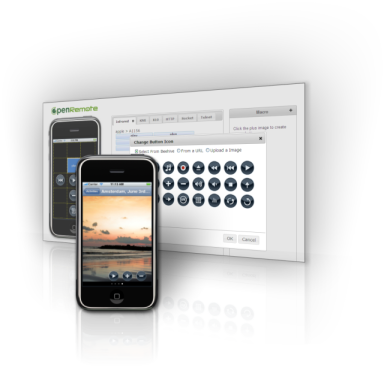
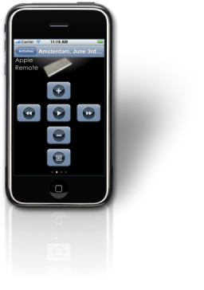

|
The first release of OpenRemote platform allows you to use iPhone or iPod Touch to remotely control devices, lights and audio/video systems in your home. OpenRemote 1.0 supports Infrared, X10, KNX, TCP/IP, HTTP and Telnet as control protocols and can integrate device control using these transports into scenes and macros. For specific details on what features are supported for each protocol, see below. Control panel support in OpenRemote 1.0 includes iPhone and iPod Touch. The user interface for these panels is customizable via our online tools. The sections below describe the use of OpenRemote Online Tools in more detail. OpenRemote 1.0 targets do-it-yourself and technical users who are comfortable installing complex software. Certain ease-of-use features for users with no previous background in installing home automation systems may still be lacking. We currently support our users through our Community User Forums
User Interface Designer for iPhone and iPod TouchThe user interface for iPhone and iPod Touch is completely customizable for each OpenRemote installation. You can use the online User Interface Designer to create and customize the interface. Buttons mapped to device commands can be added via a drag-and-drop interface and can be customized with individually designed images. In addition, macros can be created that map a button to a sequence of device commands. Macros can be nested within other macros and can mix commands using several different protocols. For more information about User Interface Designer, see our Online Tutorials.
Protocol SupportOpenRemote 1.0 release can be used for remote controlling devices. Commands are one-way, being sent from iPhone or iPod Touch to a controller. Events and status updates from devices are not sent back to an iPhone in this release. Two-way control protocols supporting state updates are implemented in the next OpenRemote 2.0 release scheduled for Q1/2010. The following protocols are supported in OpenRemote 1.0 for one-way remote control: For details on each protocol, how to use and configure and which protocol features are supported, use the links above to read further.
|
  |

Features Not Included in OpenRemote 1.0
The following features have not yet been included in the OpenRemote 1.0 release. Some of them have already been scheduled for upcoming releases.
The OpenRemote 1.0 targets functionality to remote control devices from an iPhone, and controlling lights and audio/video systems. Therefore what is not included in 1.0 release:
Device Status Updates to iPhone
Pushing status updates (such as whether light was turned on or off) is the main feature we are addressing in OpenRemote 2.0 release (scheduled for Q1/2010). This is not included in the 1.0 release.
Complete Support for Included Protocols
The OpenRemote 1.0 includes only partial support for many protocols. Please get in touch with us on the forums to let us know your additional requirements for protocol support. This helps us prioritize implementation tasks.
Insteon, Zigbee, Z-wave or Crestron Support
We are currently investigating options to add Insteon, Zigbee and Z-wave support to OpenRemote. If you'd like to discuss the technical details or contribute implementation around these areas, please let us know on Developer Design Forums
A complete plugin interface to extend the system
Extending the OpenRemote with new protocols currently involves writing Java code. A simple Java API is provided to implement a new protocol support into OpenRemote. Several of our contributors have already successfully added new protocols into the framework using this Java API, including support for UPnP, X10 and Russound. If you're looking to add your own protocol implementation, please contact us on the Developer Design Forums and we will help you with the required steps.
Extending the online User Interface Designer is currently a more involved effort. We are addressing this in the next OpenRemote 2.0 release. Creating protocol implementations using scripts will be addressed in a later release.
{kind=link}
{kind=link}
{kind=link}
{kind=link}